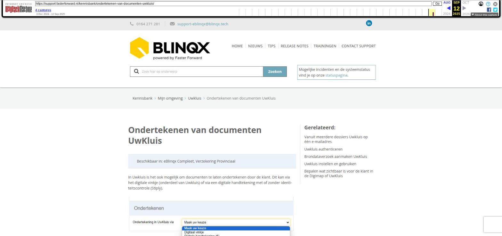

Ondertekenen van documenten UwKluis

Tekstinhoud
Ondertekenen van documenten UwKluis
Beschikbaar in: eBlinqx Compleet, Verzekering Provinciaal
In Uwkluis is het ook mogelijk om documenten te laten ondertekenen door de klant. Dit kan via het digitale vinkje (onderdeel van Uwkluis) of via een digitale handtekening met of zonder identiteitscontrole (Stiply).
Ondertekenen met digitaal vinkje instellen
Ondertekenen door klant in Uwkluis met digitaal vinkje
Ondertekenen met digitale handtekening instellen
Ondertekenen door klant in Uwkluis met digitale handtekening
Status van te ondertekenen documenten
Ondertekenen met digitaal vinkje instellen
Het digitale vinkje is geen digitale handtekening. De eindconsument geeft met het digitale vinkje aan dat hij het document gezien heeft en hiermee akkoord is. Om het digitale vinkje in te stellen ga je naar het tabblad Documenten en je klikt op het wijzigingsicoon achter het document. Bij het wijzigen van een document in eBlinqx kies je bij “Ondertekening in Uwkluis via” voor ‘Digitaal vinkje’. Zodra je de wijziging opslaat, wordt het document ter ondertekening aangeboden bij de klant.
Ondertekenen door klant in Uwkluis met digitaal vinkje
De klant gaat vervolgens naar Uwkluis. Op het Dashboard wordt aangegeven dat er een nieuw tekenverzoek voor de klant klaar staat.
Ook kan de klant naar het tabblad Verzoeken gaan. Hier staan de documenten die al zijn ondertekend en die nog ondertekend moeten worden. De klant klikt op het tekenverzoek. Onderaan het document vult hij zijn naam in, vinkt hij aan dat hij akkoord gaat met het bovenstaande document en klikt vervolgens op ‘Ondertekenen’.
Wanneer het document nog niet ondertekend is dan is het mogelijk om het tekenverzoek in te trekken. Dit ook in het wijzigingsscherm van het document.
Ondertekenen met digitale handtekening instellen
Het is ook mogelijk om te kiezen voor ondertekenen met de digitale handtekening met of zonder identificatie. Deze mogelijkheid wordt aangeboden door Stiply en is geïntegreerd in Uwkluis. Aan deze manier van ondertekenen zitten kosten verbonden die worden doorgerekend door Uwkluis. Wanneer je kiest voor ondertekenen met een digitale handtekening dan kan je aangeven wie het document moet ondertekenen. Deze optie komt alleen zichtbaar als er meerdere personen aanwezig zijn in het dossier. Let op: onder de geselecteerde personen moet een e-mailadres ingevuld zijn en dit mag niet hetzelfde e-mailadres zijn.
Ondertekenen door klant in Uwkluis met digitale handtekening
Ook hier gaat de klant naar Uwkluis en ziet hier zowel op het dashboard als bij de verzoeken een tekenverzoek staan waar hij op kan klikken. In het document zie je staan dat het document nog niet is ondertekend. Je klikt op ‘Beginnen’ om te starten met de ondertekening.
Vervolgens komt er onderaan het document een vlak te staan waarin de handtekening gezet kan worden. Hier kan je op klikken om daarna een keuze te maken hoe je de handtekening wilt zetten. Dit kan door middel van een krabbel, typen of door de handtekening te uploaden. De handtekening kan je toevoegen aan het document door te klikken op ‘Handtekening invoegen’. Je kunt zelf bepalen waar je deze handtekening wilt invoegen.
Je vult je naam in om daarna akkoord te geven.
Bij het document in eBlinqx wordt na het ondertekenen automatisch een bewijsdocument van ondertekening toegevoegd.
Status van te ondertekenen documenten
In eBlinqx zie je de documenten die ondertekend moeten worden in het tabblad Documenten in het klantdossier. Hier zie je ook de status van het ondertekenen:
Oranje – Document is aangeboden om te ondertekenen, maar nog niet ondertekend
Groen – Document is ondertekend
Indien er meerdere personen geselecteerd zijn voor het ondertekenen dan krijgt het document pas de status ‘Document is ondertekend’ als beide personen het document ondertekend hebben.
Let op: ondertekenverzoeken via Stiply verlopen na 90 dagen. De ondertekenverzoeken worden na die 90 dagen verwijderd uit Uwkluis.
Laatste update: 4 juni 2025
Was deze informatie nuttig?
Ja Nee